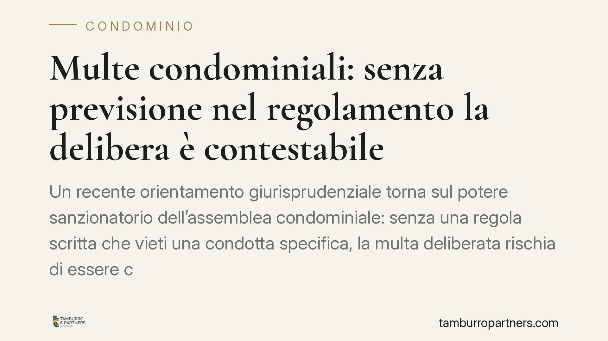

Multe condominiali: senza previsione nel regolamento la delibera è contestabile
Un recente orientamento giurisprudenziale torna sul potere sanzionatorio dell'assemblea condominiale: senza una regola scritta che vieti una condotta specifica, la multa deliberata rischia di essere contestata. Il tema ruota attorno all'art. 70 disp. att. c.c. e ai tetti fissati dalla riforma del 2012. Vediamo cosa serve davvero per irrogare una sanzione legittima e come difendersi da quelle irregolari.

Il caso
La questione si ripropone con frequenza nelle aule di giustizia: l'assemblea delibera una multa a carico di un condòmino, ma il regolamento condominiale non contiene alcuna previsione che vieti espressamente la condotta contestata o che disciplini la sanzione.
Un orientamento giurisprudenziale di merito ha affrontato di recente il tema, ribadendo un principio noto: il potere sanzionatorio dell'assemblea non è libero, ma trova fondamento e limiti nella fonte regolamentare. Dove manca la regola scritta violata, la delibera che irroga la multa è esposta a contestazione.
> Nota metodologica: prima di citare estremi puntuali di una pronuncia, verifichiamo sempre numero, anno e autorità. In questa sede ci limitiamo a esporre l'orientamento, che resta coerente con il quadro normativo vigente.
Inquadramento normativo
L'art. 70 delle disposizioni di attuazione del codice civile prevede che, per le infrazioni al regolamento condominiale, possa essere stabilito a titolo di sanzione il pagamento di una somma. La Legge n. 220/2012 (riforma del condominio) ha aggiornato questi importi, fissando il tetto ordinario a 200 euro e quello per le violazioni reiterate a 800 euro.
La norma, dunque, individua direttamente il *limite* della sanzione pecuniaria. Su questo punto occorre una precisazione: secondo un'interpretazione sostenibile, la sanzione presuppone non solo una regola di condotta scritta, ma anche una previsione dell'importo nel regolamento. Secondo un diverso orientamento, poiché l'art. 70 fissa già i tetti legali, l'assemblea potrebbe deliberare entro quei limiti anche in assenza di un importo pre-specificato. La questione non è pacifica e va valutata caso per caso.
Resta fermo, in ogni caso, il requisito della regola violata: la sanzione deve ancorarsi a una condotta che il regolamento vieta o impone. Non si può punire ciò che non è stato previamente disciplinato.
Il nodo interpretativo: nullità o annullabilità?
Qui si colloca il vero punto controverso. Quando la multa è deliberata senza base regolamentare, come si qualifica il vizio della delibera?
- Un orientamento ritiene la delibera nulla, perché priva di fondamento causale: in questo caso il vizio sarebbe deducibile senza limiti di tempo.
- Altra parte della giurisprudenza e della dottrina qualifica invece la delibera annullabile, per difetto di attribuzione o eccesso di potere dell'assemblea. In tal caso opererebbe il termine di 30 giorni previsto dall'art. 1137 c.c. per l'impugnazione, decorrente dalla deliberazione per i presenti e dalla comunicazione per gli assenti.
La distinzione è decisiva sul piano pratico. Chi ritiene annullabile la delibera deve muoversi entro trenta giorni, pena la stabilizzazione della sanzione; chi la ritiene nulla dispone di margini più ampi. In presenza di un quadro così controverso, il consiglio tecnico è non confidare automaticamente sull'imprescrittibilità della contestazione.
Regolamento contrattuale e assembleare: le maggioranze
Un aspetto spesso trascurato riguarda la fonte delle regole sanzionatorie. Il regolamento contrattuale (approvato all'unanimità o accettato nei singoli atti d'acquisto) può incidere su diritti individuali e limitazioni d'uso delle proprietà esclusive. Il regolamento assembleare si forma invece con le maggioranze dell'art. 1138 c.c.
Per introdurre o integrare un apparato sanzionatorio occorre verificare quale tipo di regolamento sia in essere e quali maggioranze siano necessarie. Modificare regole di natura contrattuale con una semplice delibera a maggioranza espone la decisione a impugnazione.
Implicazioni pratiche
Per l'amministratore, la lezione è chiara: non basta la volontà assembleare per sanzionare. Serve una copertura regolamentare della condotta contestata e il rispetto rigoroso dei tetti di legge.
Per il condòmino destinatario di una multa, la delibera non è un atto da subire passivamente. Va letta con attenzione: l'assenza di una regola scritta violata o il superamento dei limiti legali sono profili di contestazione concreti.
Cosa fare in concreto
Per l'amministratore:
- Verifica che il regolamento preveda espressamente la condotta che intendi sanzionare, prima di porre la multa all'ordine del giorno.
- Resta entro i tetti di legge: 200 euro per la violazione ordinaria, 800 euro per quella reiterata.
- Documenta la violazione e verbalizza con precisione fatto, norma regolamentare violata e importo.
Per il condòmino:
- Controlla se il regolamento contiene la regola che ti viene contestata e se la sanzione rispetta i limiti dell'art. 70 disp. att. c.c.
- Annota la data di comunicazione della delibera: il termine di 30 giorni per l'eventuale impugnazione è stringente.
- È opportuno un esame tecnico della delibera prima di qualsiasi decisione sul pagamento o sulla contestazione.
Nota conclusiva
Il potere sanzionatorio in condominio esiste, ma è vincolato: regola scritta, condotta tipizzata, importo entro i limiti di legge. Il perimetro del vizio — nullità o annullabilità — resta discusso e incide direttamente sui tempi di reazione. Per questo ogni delibera sanzionatoria merita una lettura puntuale, caso per caso.
---
*Contributo informativo a cura di Tamburro & Partners - Avv. Giuseppe Tamburro. Non costituisce parere legale.*
Ogni condominio ha una storia a sé.
Se gestisci un'amministrazione e vuoi un confronto su una specifica questione condominiale, scrivi allo studio. Ti rispondiamo entro un giorno lavorativo.